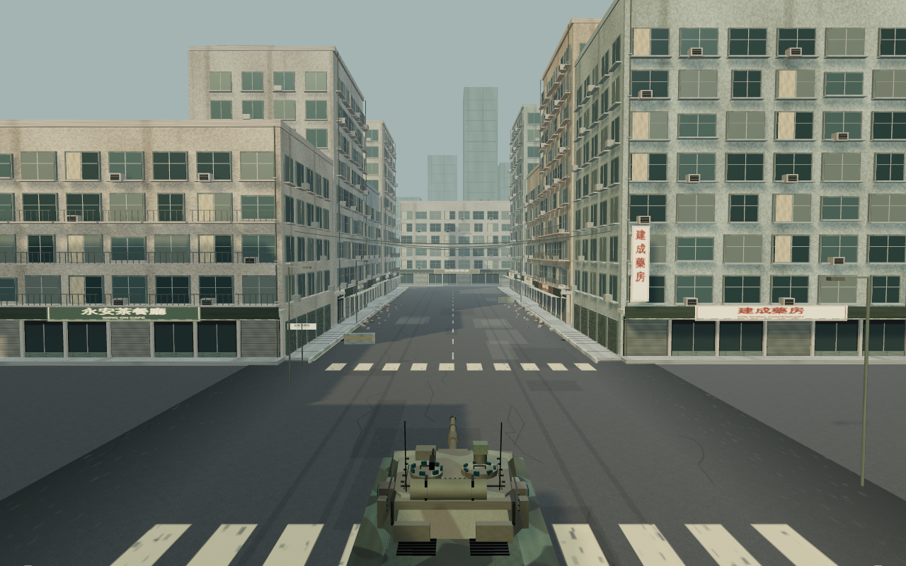
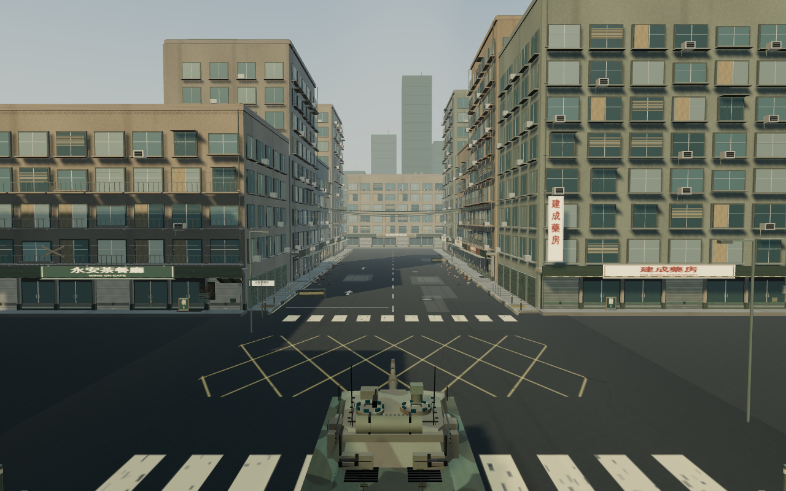
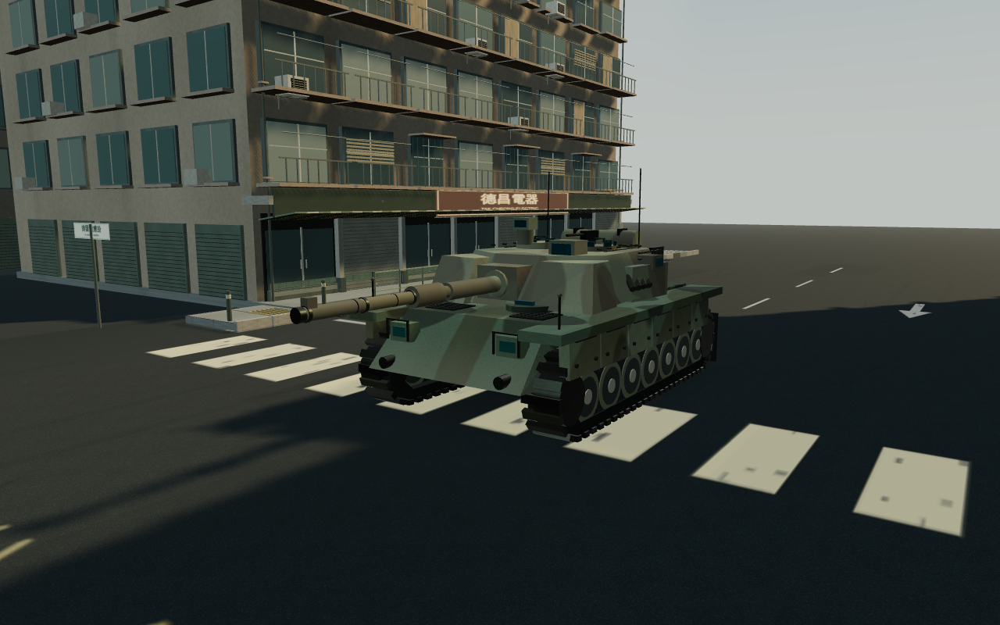
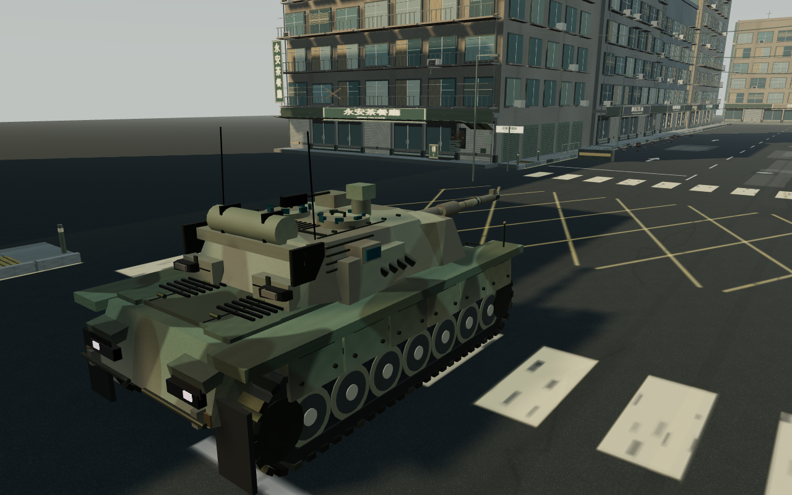
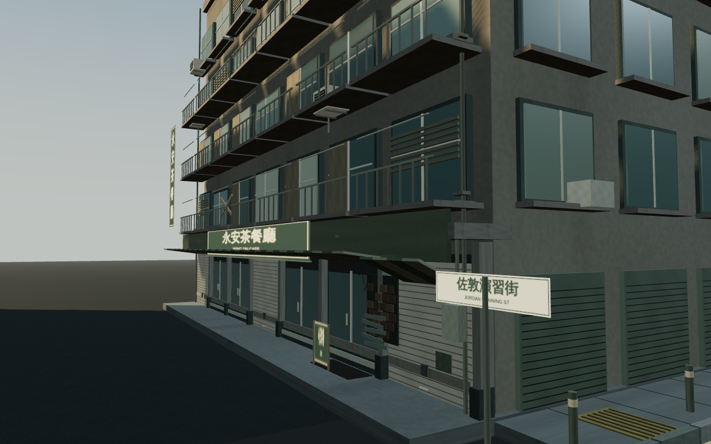
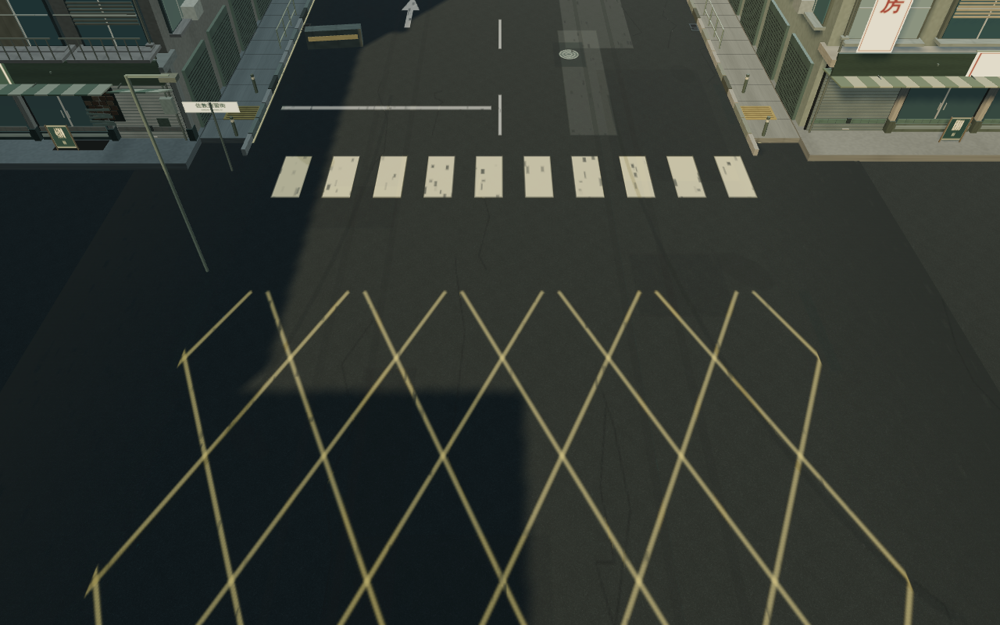
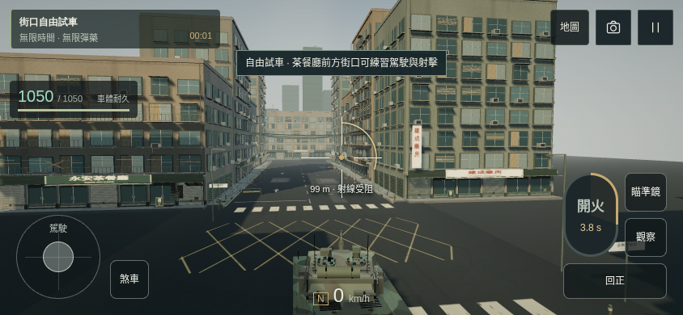

這一輪集中深化車體、九龍街道與射擊觀感：115 項細節工作，包含敵我識別、路面標記、店舖構件、戰損、炮彈外形及炮口衝擊。仍是可玩的獨立樣板。







電腦：WASD 駕駛、B 煞車、Q／E 轉炮塔、Space 開炮、Esc 暫停。手機：左搖桿駕駛，右側拖曳瞄準，按「開火」。
模型、城市及炮聲仍為原創程序化製作；不是實景掃描，也未達大廠完成品標準。Windows、Safari、iPhone／Android／iPad 實機及真人試聽未驗證。正式版未被取代。